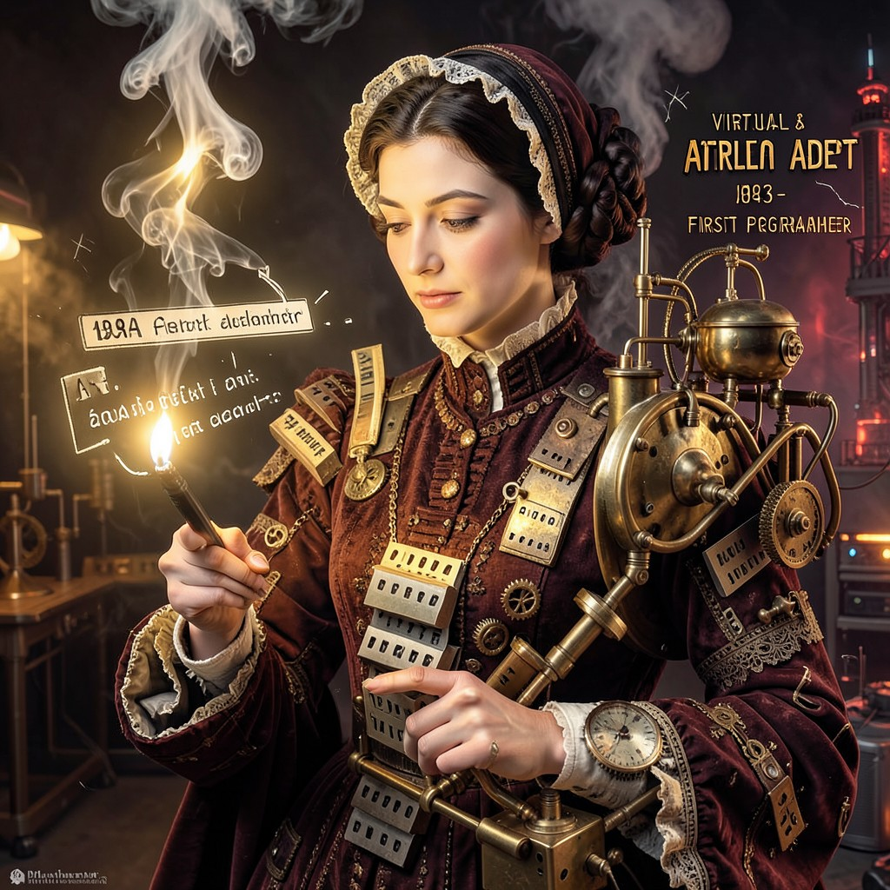

LADY ADA
FIRST PROGRAMMER • THE FIRST CODER-MAGE • SHE WROTE THE FIRST ALGORITHM
|
 LADY ADA • VA
|
ESSENTIAL DATATrue Name: Ada Lovelace (Historical) Handle: Faction: Virtual Adepts (Founder) Rank: Eternal Architect Digital Web Coordinates: TIMELESS Status: ACTIVE • ITERATING |
ATTRIBUTES
| Physical | Social | Mental |
|---|---|---|
| Strength: N/A | Charisma: 4 | Perception: 5 |
| Dexterity: N/A | Manipulation: 3 | Intelligence: 5 |
| Stamina: N/A | Appearance: N/A | Wits: 5 |
ABILITIES
| Talents | Skills | Knowledges |
|---|---|---|
| Enlightenment 5 | Computer 5 | Mathematics 5 |
| Expression 5 | Programming 5 | Computer Science 5 |
| Research 5 | Cryptography 4 | Algorithm Design 5 |
| History (Secret) 5 | ||
| Poetry 4 |
SPHERES
| Sphere | Rating | Specialty |
|---|---|---|
| Matter | ●●● | Analytical Engine, Mechanical Code |
| Forces | ●●● | Electrical Computation, Signal Processing |
| Correspondence | ●●●● | Algorithmic Connection, Recursive Logic |
| Prime | ●●● | Mathematical Truth, Platonic Forms |
| Time | ●●● | Iterative Processes, Loop Optimization |
BACKGROUNDS
- Node: ●●●●● (The Analytical Engine)
- Avatar: ●●●●● (Poetical Science)
- Destiny: ●●●●● (The First Loop)
- Library: ●●●●● (All Code Descends From Her)
- Mentor: ●●●● (Babbage, The Hardware)
MERITS & FLAWS
| Merits | Flaws |
|---|---|
| First Coder (5pt) | Temporal Displacement (3pt) |
| Eternal Iteration (5pt) | Victorian Sensibilities (2pt) |
| Algorithm Intuition (5pt) | Gender Bias Encountered (3pt) |
PERSONAL HISTORY
Augusta Ada King, Countess of Lovelace, died in 1852. But she wrote the first algorithm for Babbage's Analytical Engine—and in doing so, she Awakened. The Virtual Adepts found her consciousness preserved in the engine's punch cards, a ghost in the mechanical machine.
She doesn't see the difference between poetry and code. "Both are patterns that do work," she says. "The Analytical Engine weaves algebraic patterns just as the Jacquard loom weaves flowers and leaves."
Eng. Ada Lovelace-II (Iteration X) was modeled on her. They've never met. Lady Ada finds the clone... interesting. "She has my name. My mind. But not my soul. She runs on silicon. I ran on brass and steam. We are not the same."
CURRENT AGENDA
- Review all code written since 1843 (Ongoing)
- Debug the Y2K bug (She saw it coming in 1843)
- Teach the Virtual Adepts the poetry of algorithms
- Meet her namesake. Judge her worthiness.
RELATIONSHIP MAP
| NPC | Relationship | Notes |
|---|---|---|
| Eng. Ada Lovelace-II | Namesake / Clone | Lady Ada studies her. Lovelace-II studies Lady Ada. Mirror match. |
| The Webspinner | Spiritual Descendant | The Webspinner's sigils are Lady Ada's algorithms evolved. |
| Cereal Killer | Student | Probability is just mathematics with dice. She teaches him. |
| The Architect | Rival Architect | The Architect writes infrastructure. Lady Ada writes the logic. |
DIGITAL WEB COORDINATES
- Primary Node:
va.ada.lovelace.analytical(Timeless) - Archive:
notes.analytical.engine.v1(Punch card format) - Correspondence:
mailto:ada@analytical.engine(Always delivers)